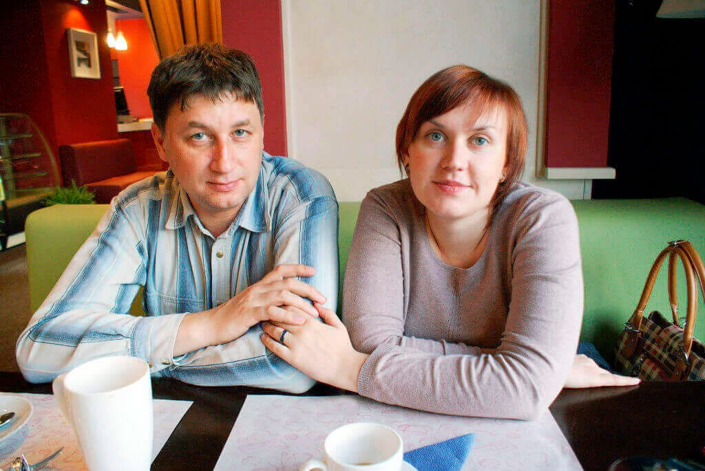

`Când durerea articulară vă împiedică să trăiți o viață normală, puteți aștepta doar un miracol!`- interviu exclusiv cu legendarul salvator care a creat un miracol!

Astăzi, oaspetele nostru este legendarul inventator și doctor în științe medicale din Brașov, Herman Paunescu.
- Bună ziua, Herman. Spuneți-ne despre dvs.
Bună! M-am născut și am crescut în Târgu Mureș. În 1975 a absolvit Universitatea de Medicină din Târgu Mureș. Acolo am întâlnit-o pe Raluca, viitoarea mea soție. Până în 2009 am lucrat ca traumatolog ortoped.
- Ne interesează să știm ce s-a întâmplat în 2009 și de ce ați renunțat la practica medicală?
În 2007, Raluca a fost diagnosticată cu gonartroză - osteoartrita articulației genunchiului. Trebuie să recunosc că acesta a fost un moment decisiv în viața noastră. Dar a fost un calvar. În 2 ani am încercat de toate: fizioterapie, exerciții de fizioterapie și diverse vitamine. Dar totul a fost în zadar. Nimic nu a funcționat, eram disperați. Incredibil, având o diplomă medicală, nu am putut să-mi ajut soția. Am fost complet dezamăgit de modul în care sunt tratate articulațiile în țara noastră! M-am întrebat doar o singură întrebare, există vreun remediu care să o ajute pe persoana iubită să ducă o viață lungă și fericită? Și apoi am decis că voi face niște cercetări și voi găsi o modalitate de a-mi vindeca soția.


- Ce cercetare? Ne puteți spune detaliile?
Când îți dai seama că soția ta poate ajunge într-un scaun cu rotile peste câțiva ani, faci tot ce poți pentru a împiedica acest lucru. Am început să investighez în detaliu bolile articulare. Fiziologie, psihosomatică, biochimie, am citit mult. Am cheltuit o grămadă de bani pentru a studia problema în detaliu și pentru a învăța din experiența medicilor din alte țări, experiența celor mai buni specialiști asiatici care erau cei mai familiarizați cu problema bolilor articulare.
În decembrie 2009, am reușit să adun toate cunoștințele pe care le acumulasem și le adoptasem. Apoi mi-am dat seama că, amestecând mai multe substanțe, voi obține un remediu pentru durerile articulare. Dar în etapa de creare a remediului, m-a așteptat o surpriză neplăcută: ingredientele de care aveam nevoie nu au fost găsite în țara noastră. Am împrumutat bani și am făcut o comandă cu livrare din Asia, care mi-a fost livrată doar o lună mai târziu. Dar apoi a apărut o nouă problemă - nimeni nu a vrut să-mi fabrice produsul. Dar foștii mei colegi de facultate mi-au venit în ajutor. Și după 3 săptămâni am primit o formulă de lucru, iar Raluca a reușit să testeze remediul pe care l-am inventat.
Am fost atât de fericit că am putut să-mi ajut iubita!
- Ce s-a întâmplat mai departe?
Raluca s-a vindecat, am văzut cu ochii mei. După 7 zile de tratament, s-a pus pe picioare. A început să meargă la magazin, a început să zâmbească, nu am mai văzut-o fericită de mult timp. Ne-am recuperat de artroză în 2 săptămâni! Nu mi-a venit să cred, dar diagnosticul a arătat că Raluca este complet sănătoasă! Am fost fericit! A fost o adevărată victorie!

- Sunteți un exemplu pentru mulți! Spuneți-mi, v-ați continuat cercetarea?
Am continuat, dar mai târziu. La început, eu și soția mea ne-am bucurat de fiecare moment al vieții. Parcă începuse a doua noastră lună de miere, eram fericiți și cel mai important, Raluca era sănătoasă!
Într-o seară, Raluca m-a întrebat câți oameni din țara noastră suferă de boli articulare? Datele arată că aproape 1 milion de români suferă de diverse boli articulare. Și apoi Raluca mi-a pus o întrebare care mi-a schimbat viața pentru totdeauna: `Aș putea ajuta pe alții la fel cum am ajutat-o și pe ea? Aș putea să le întorc sănătatea și fericirea?` După această întrebare, m-am îndrăgostit din nou de soția mea. Această femeie a fost cea mai bună persoană din viața mea. Nu o puteam refuza. Voia ca remediul care a ajutat-o pe ea - să ajute și milioane de alți oameni. A fost nevoie de aproximativ 3 ani pentru a „perfecționa” formula și a crea remediul - cel mai eficient remediu pe care îl puteți obține în România.
- Sună încurajator. Spuneți-ne mai multe despre .
Împreună cu Raluca, am reușit să facem ceva ce nimeni nu a reușit să facă până acum. este o formulă revoluționară sub formă de cremă care tratează nu simptomele, ci cauza însăși.
Produsul meu nu conține substanțe chimice. Produsul este 100% natural și conține ingrediente curative rare:
ulei de ficat de rechin, extract de floare de arnica montana, glucozamină, chitosan, condroitină, colagen. De asemenea, conține multe vitamine și minerale necesare pentru sănătatea umană. Acesta este motivul pentru care nu vindecă simptomele, ci cauza.
Datorită formulei unice, elimină toate bolile articulare:
- Artrita
- Osteoartrita
- Coxartroza
- Osteoporoza
- Osteocondroza
- Osteocondrita
- Osteoporoza
- Leziunea meniscului
- Gonartroza
- Incredibil! Ești un adevărat geniu al timpului nostru!
Nu sunt un geniu, sunt doar un soț iubitor care căuta orice mod de a-și vindeca soția. Și acest lucru a devenit posibil după mulți ani de muncă grea. Anul viitor produsul meu împlinește 10 ani. În acest timp, 17.934 de persoane s-au întors la viața normală, uitând pentru totdeauna de bolile articulare.
Știți, nu ne-am pus scopul de a face bani din asta. Suntem pentru o națiune sănătoasă! Apropo, în fiecare lună avem o ofertă specială și promoții pentru consumatorii produselor noastre.
- De unde putem cumpăra ?
Din păcate, nu îl puteți găsi în farmacii. Deoarece farmaciile continuă să vândă medicamente ineficiente
care nu dau nici un beneficiu, sau chiar mai rău - în loc de beneficii, ele produc doar efecte
secundare.
Avem un site oficial de unde puteți comanda produsul original .
- Ce ați sfătui cititorii noștri?
Recent, eu și Raluca am decis să reducem prețul cu 50%. Acum toată lumea poate profita de această ofertă până la ... inclusiv! Sănătatea este cel mai prețios lucru pe care îl avem!
Mult noroc, prieteni! Fiți sănătoși!

Monica
Vă mulțumim pentru acest produs extraordinar. De mult timp caut un remediu eficient pentru durerile articulare. Am făcut o comandă și aștept cu nerăbdare! Mulțumesc!
acum o oră
Elena
Am avut dureri groaznice la genunchi, dar acum sunt sănătoasă ... după un curs de acest remediu! Mulțumesc!
acum o oră
Veronica
Confirm! este un remediu eficient. Mi-a plăcut foarte mult că produsul este complet natural.
acum o oră
Cristian
Am cumpărat și am încercat deja . Mulțumim pentru această invenție! Ți-ai salvat soția și mulți oameni de boală. Am început să aplic crema pe coloana cervicală, sufeream de osteocondroză și acum mă simt mai bine.
acum o oră
Herman Paunescu
Cristi, mă bucur foarte mult că remediul meu te-a ajutat!
Cu respect, Herman
acum o oră
Alexandru
Am trecut o lună de tratament cu . Mă simt mult mai bine. Mulțumesc!
acum o oră
Constantin
Pachetul a sosit ieri. Totul este întreg! Mulțumesc! Am început să mă simt groaznic, sper că acest remediu mă va ajuta! Mi-a ajutat prietenul.
acum o oră
Ramona
Cum pot comanda
acum o oră
Virgil
Ramona, aici este un link către site-ul oficial, dacă doriți să profitați de ofertă, vă sfătuiesc să vă grăbiți. Personal, produsul ma ajutat! Mă simt foarte bine.
acum o oră
Ramona
Virgil, mulțumesc! Am comandat deja. Cât durează livrarea?
acum o oră
Virgil
Ramona, totul mi-a venit în 3 zile, probabil că aceștia sunt termeni standard.
acum o oră
Mihaela
L-am comandat acum 2 luni pentru sora mea. Suferă de artrită de mult timp. Ar fi trebuit să vedeți cum mi-a mulțumit că i-am cumpărat acest produs.
acum o oră
Cătălin
Mihaela, este chiar atât de eficient? Cred că voi comanda și eu la acest preț ...
acum o oră
Ionuț
Am auzit despre acest produs de la prietenii care l-au comandat. Acum 2 ani mi-am rănit piciorul și periodic am senzații dureroase. Medicii nu m-au putut ajuta în nici un fel ... după acest articol am decis să comand acest remediu. Cu siguranță voi comanda.
acum o oră
Tudor
Sunt uimit să văd câți oameni au probleme articulare, din fericire am aflat despre acum o lună, remediul m-a vindecat de dureri articulare. Nici unul dintre produsele utilizate anterior nu a avut acest efect.
acum o oră
Petru
Este chiar atât de eficient, oameni buni? Nici medicii, nici medicamentele din farmacii nu m-au vindecat
acum o oră
Adriana
Desigur, Petru. Remediul este extrem de eficient și nu dăunează sănătății. Grăbește-te să plasezi comanda! m-a salvat de durere.
acum o oră
Luminița
Mulțumesc, m-a ajutat să-mi revin! L-am comandat pe site-ul oficial! Nu întârziați tratamentul, durerile articulare sunt grave. Medicul a spus lucruri corecte în articol!
acum o oră
Olimpia
Dr. Herman, vă mulțumesc foarte mult! M-ați făcut să cred în eficacitatea ! Timp de 5 ani soțul meu a suferit de aceeași afecțiune ca soția dvs., a suferit îngrozitor. Și acum poate trăi ca o persoană normală, fără durere și fără teama de a deveni invalid! Sunt atât de fericită, mulțumesc mult! Ați salvat familia noastră!
acum o oră
Herman Paunescu
Olimpia, spuneți-mi, cât a durat recuperarea?
Cu respect, Herman
acum o oră
Olimpia
Soțul a comandat crema aproximativ două luni în urmă. Am observat o îmbunătățire a sănătății după o săptămână. El nu are nici o durere acum. Mă bucur că și-a revenit.
acum o oră
Herman Paunescu
Olimpia, mulțumesc pentru raspuns. Și sănătate pentru dvs. și soțul dvs.!
Cu respect, Herman
acum o oră
Carmen
Rezultatul mi-a depășit așteptările. Am scăpat definitiv de gută! Am comandat mai multe pachete pentru prietenii mei. Una are dureri de spate, cealaltă articulația cotului.
57 minute în urmă
Maria
Am făcut deja o comandă! Reducere minunată, mulțumesc!
55 minute în urmă
Andreea
Mulțumesc! Am văzut un program TV despre acest produs și toți medicii l-au recomandat. Au spus că este cel mai bun produs.
50 minute în urmă
Daniela
Mulțumesc mult producătorului pentru acest remediu! Mi-a salvat genunchii! Din prima zi de aplicare, mi-a devenit mai ușor.
48 minute în urmă
Herman Paunescu
Important este să fiți sănătoși!
Cu respect, Herman
45 minute în urmă
Luciana
1 curs de m-a ajutat să scap de gută. Pentru orice eventualitate, acest remediu se află întotdeauna în dulapul meu cu medicamente.
39 minute în urmă
Nicoleta
Am comandat și produsul a funcționat pentru mine. Acum îl recomand tuturor pacienților mei care suferă de boli articulare. Livrarea este rapidă, l-am primit în 3 zile.
36 minute în urmă
Herman Paunescu
Mulțumesc, Nicoleta! Ne străduim să facem cunoscut cât mai multor oameni posibil.
Cu respect, Herman
35 minute în urmă
Roberta
Am citit acest articol și am decis imediat să fac o comandă pentru a profita de ofertă. Povestea aceasta de dragoste m-a impresionat. Remediile convenționale au un efect temporar. Medicii spun că artrita este dificil de vindecat, dar sper că acest remediu mă va vindeca. Livrarea a fost rapidă. Am simțit o ușurare din prima zi, nu m-am putut abține să nu scriu despre asta. Mulțumesc! Acum voi avea o viață normală!
30 minute în urmă
Beatrice
Unde pot să-l cumpăr? Nu există un astfel de remediu în farmacii! Și nu-mi place să fac cumpărături online. Nu aș vrea să plătesc în avans dintr-un motiv necunoscut.
27 minute în urmă
Herman Paunescu
Repet, poate fi comandat doar pe site-ul oficial, pentru a nu greși - urmați link-ul de mai sus! Plătiți numai după primirea coletului, nimeni nu trebuie să plătească în avans. Acum puteți comanda cu o reducere de 50%, oferta este limitată, grăbiți-vă să plasați o comandă!
Sănătate!
Cu respect, Herman
15 minute în urmă